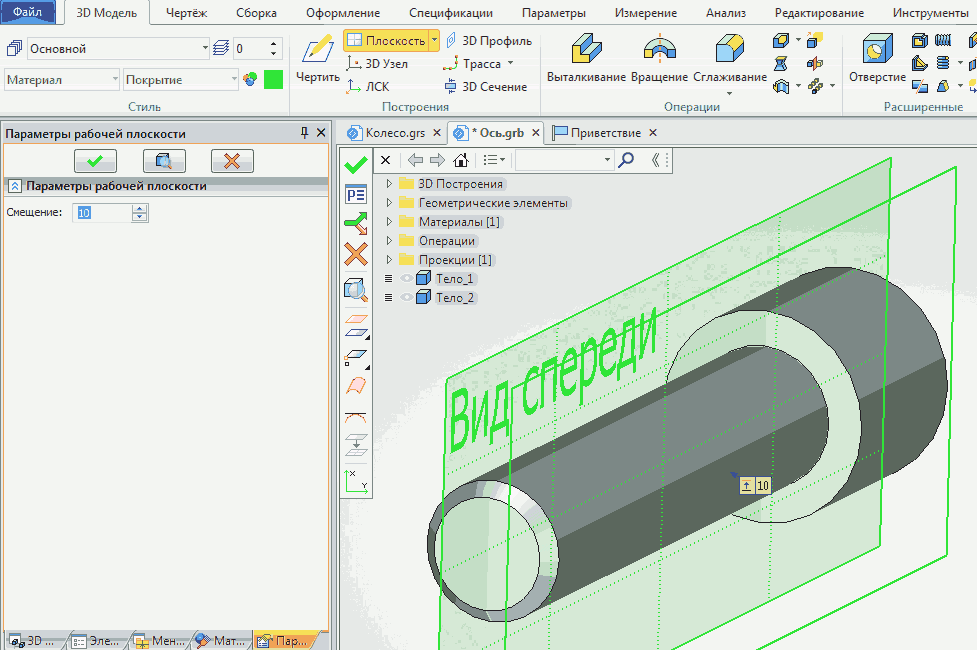
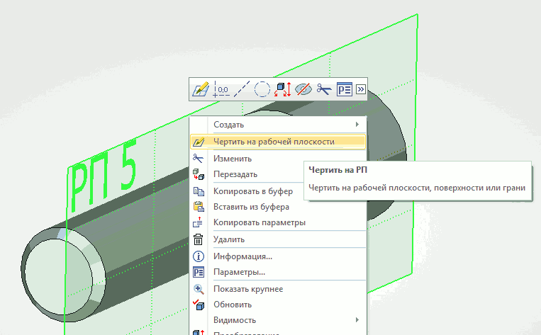
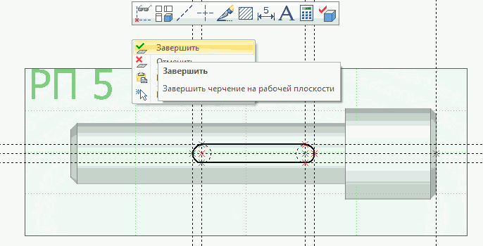
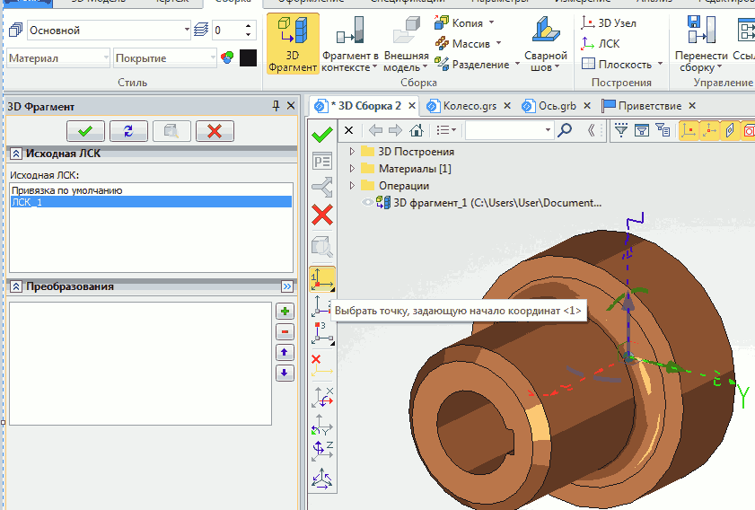

Создадим сборку детали Колесо с деталью Ось, чертёж которой показан ниже. Создайте сначала 3D - модель оси. Принцип создания как и у колеса. Покажу дополнительно только создание шпоночного паза, т.к. там потребуется создание дополнительной рабочей плоскости.
Для построения эскиза шпоночного паза предварительно создадим дополнительную рабочую плоскость, смещённую на 10мм от центральной.
Выберем команду Плоскость, щёлкнем по центральной плоскости (у меня это Вид спереди) и зададим в параметрах расстояние смещения (10мм). Для завершения щелчок по зелёной галочке.

Создадим эскиз на созданной рабочей плоскости. Видимость центральной плоскости для удобства можно погасить.

Сделаем разметку шпоночного паза при помощи вспомогательных линий, обведём контур линией изображения и выйдем из режима построения эскиза.

Создадим вырез операцией Выталкивание на 3мм с использованием булевой операции Вычитание.
Не забудьте щёлкнуть по стрелке для изменения направления выталкивания
(прямое направление — по красной стрелке).В результате получим следующее (профиль эскиза и рабочая плоскость сделаны скрытыми, построена дополнительная ЛСК).
Создадим новый чертёж (3D - сборку) и активизируем команду
3D - фрагмент.
Щёлкнем по кнопке Выбрать в диалоге... ... и выберем в папке деталь Ось, нажмём Открыть.
В окно модели вставится деталь Ось. При необходимости её можно перенести вдоль осей, потянув ЛКМ за любую из осей (растояние перемещения проставить в закладке
Преобразования) или повернуть на любой угол (на 90 град с помощью кнопок на узкой панели, при повороте на произвольный угол через закладку Преобразования)). Если нас устраивает положение вставки детали жмём галочку.
Опять воспользуемся командой 3D - фрагмент.. Выберем в диалоге деталь Колесо и после её вставки в модель нажмём кнопку Выбрать точку, задающую начало координат
, после чего укажем созданную нами ранее ЛСК и щёлкнем по галочке.

Осталось указать Целевую систему координат (в нашем случае это
ЛСК на детали Ось), или сразу щёлкнуть по галочке в знак согласия.Сохраним сборку под названием Колесо с осью.